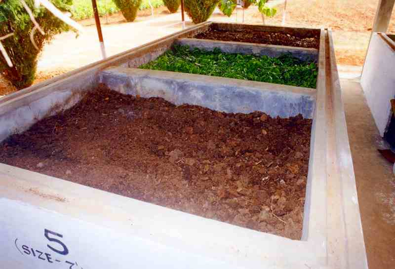

Farmers’ best friend, earthworm has been existent at least since the past 20 million years. Needless to say, they have been faithfully releasing the organic nutrients from the dead tissues back into the soil and thus making it available to the living organisms. They have an important roll in organic farming.
Earthworms feed on the decaying organic matter and survive in soil. During digestion in the alimentary canal, all the organic waste gets transformed into natural fertilizer. The pH is neutral and it is an odorless organic matter. After digestion, the undigested food is excreted. There is a thin oily layer on the excreted material or casting which takes as much as two months to erode. In other words, the castings that are rich in plant nutrients are made available gradually since they are released slowly into the soil. Hence they last longer. These castings also contain microbes and hence the process of decomposition is continued through microbial action outside the body of the earthworms.
What is VermicompostingBiologically, it is defined as the process of turning organic debris into worm castings that play a crucial role in increasing the fertility of soil. These castings contain seven times more potash, five times more nitrogen and 1.5 times more calcium than what is found in the topsoil. In addition they have better moisture retention capacity, aeration, porosity and structure than the topsoil. The water absorption capacity of the soil is enhanced thanks to the burrowing action of the earthworm, and the organic content in the castings. Research has shown the castings to hold nine times their weight in water.
Objective of Vermicomposting ProjectThe main objective of vermicomposting project is to produce organic manure of exceptional quality for the organically starved soil. Agricultural wastes, wastes from dairy and animal farms are usually dumped into at places resulting in a foul mess. By vermicomposting these wastes, they are not only utilized efficiently but also help in making a value-added product.
Types of Earthworm and ClassificationStudy of earthworms was pioneered by Charles Darwin. Taking the cue, Barrett and George Oliver carried out an extensive study and demonstrated the benefits of earthworms in agriculture. Barrett was the first person to grow earthworms on a commercial scale.
Totally there are 386 different varieties of earthworms that have been identified that are broadly classified into 3 categories, viz. epigeic, endogeic and diageic. This classification is based on their feeding habits, habitat in soil strata, response to the soil conditions and defecation activities.
The most essential production requirements in vermicomposting project are the base material and the right species of earthworm.
Base MaterialThe base materials needed for vermicomposting must be organic and biodegradable. They include:
Poultry droppings being high in nitrogen must be added in small quantities. Hotel refuse and organic wastes from agro or food industries can be also included in the compost material as feed for earthworms.
Earthworm SpeciesThere are more than 2500 earthworm species in the world. They are diverse in nature and it is recommended to use the locally available variety since it is indigenous to the place and is naturally adapted to the particular geographical location. For commercial vermicompost project there are specific earthworm species available like Eisenia foetida, Perionyx excavatus, Eudrilus eugeniae, etc. Eisenia foetida, also called Red earthworm has a high rate of multiplication. It converts the organic materials from the top, that is, it is a surface feeder. Conversion of organic matter into compost is done within 45-50 days.
Vermicomposting MethodsThere are different methods of vermicomposting. However, the bed and pit method are the most commonly followed among them. In the bed method, a bed of organic mixture is made on the floor. The dimensions of the bed are 6ft * 2ft * 2ft. It is an easy to practice and maintain method.
In the pit method, cemented pits of 5ft * 5ft * 3ft are used for composting. They are covered with local materials like thatched grass, dry leaves, twigs, etc. However, aeration and water logging is a major problem in this method. Therefore, most farmers do not prefer this method of composting.
When tanks are prepared, there must be enough holes to aid excess water drainage. The bedding for the earthworms generally comprise of saw dust, sand, broken pieces of bricks and soil. The worms are first released into the bedding followed by the feed material. The depth of the feed material must not be more than 2 feet deep. For the initial 2 months, the tank must be sprinkled with water from time to time and it should be well-aerated. The weight, size and cocoon producing capacity of the worms increase and is at optimal level when the temperature, moisture and organic matter content are at optimum.
It has been observed that a kilogram of worms can convert 25-45 Kg of wet waste on weekly basis. In other words, there can be a compost recovery of at least 25 Kg per week with a kilogram of worms that number to about 1000 worms. They can produce 2000-5000 cocoons on weekly basis. The incubation period of the cocoons is 2 weeks and their rate of survival is 60%. They are sexually mature within 6-8 weeks. In case of optimal growth conditions, the rate of growth is very high. The mature worms lay eggs at an interval of 7-10 days. They produce 247 worms annually. It is observed that 1 Kg of earthworms multiplies to 20 Kg within 4 months!
Precautionary Measures in VermicompostingDuring vermicomposting, there are certain points that must be taken care of. This is especially because the earthworms are highly sensitive organisms. Any small change in the thriving conditions would affect their conversion ability. The caution points are as below:
Vermicomposting is an excellent source of alternate income for farmers. The compost after drying can be sold. Similarly, the worms can be sold to other farmers who are looking to start vermicomposting in their farms. It is a good thriving, all-season business for entrepreneurs that involves minimum investment and labor but maximum benefits.
References: